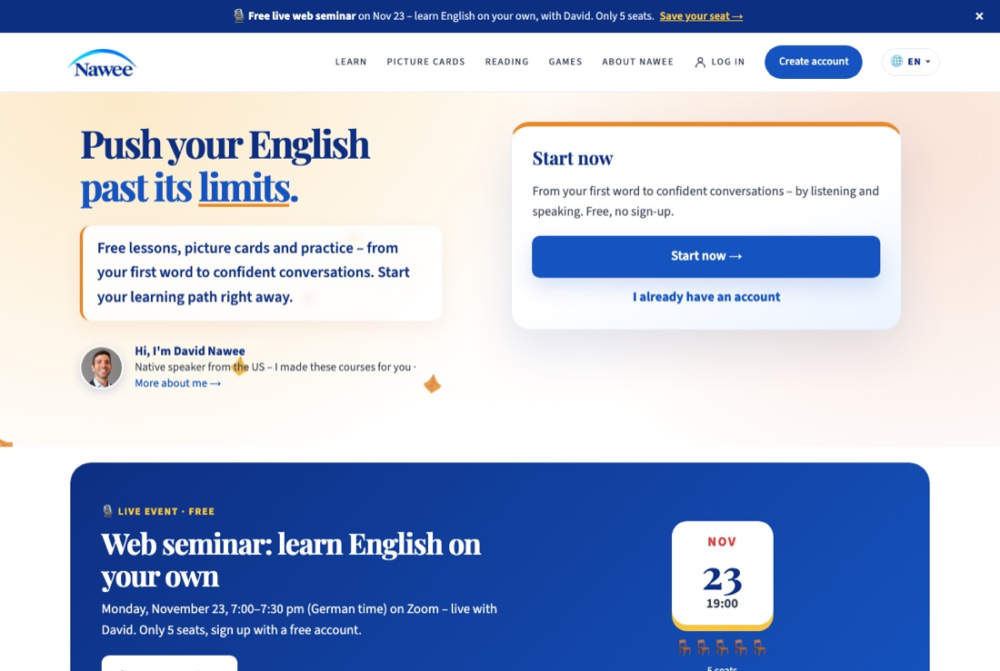
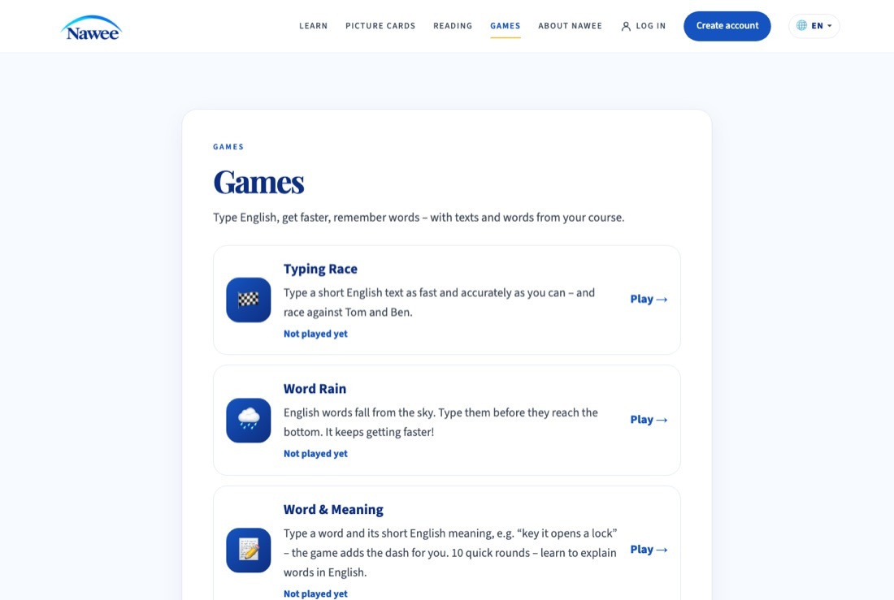
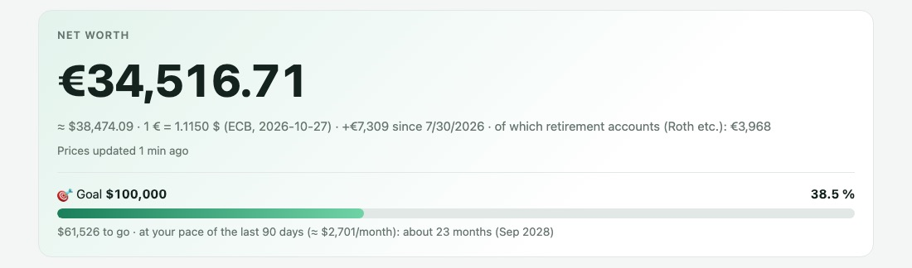
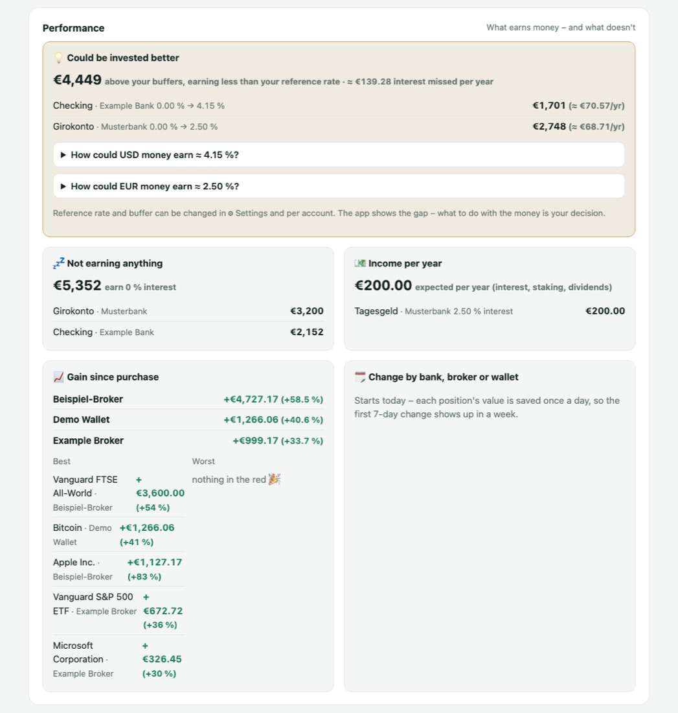
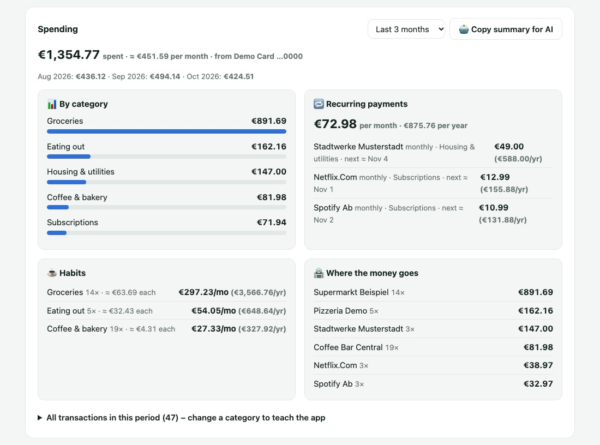
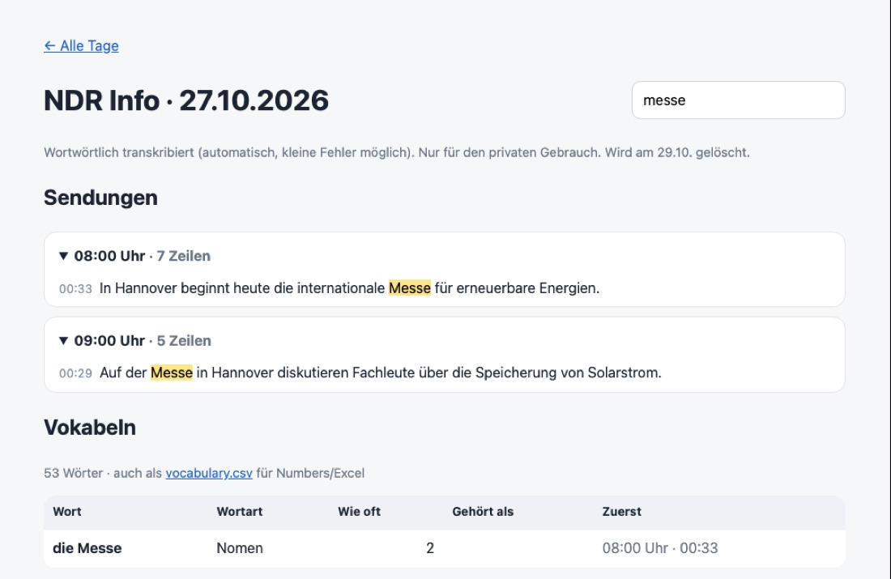
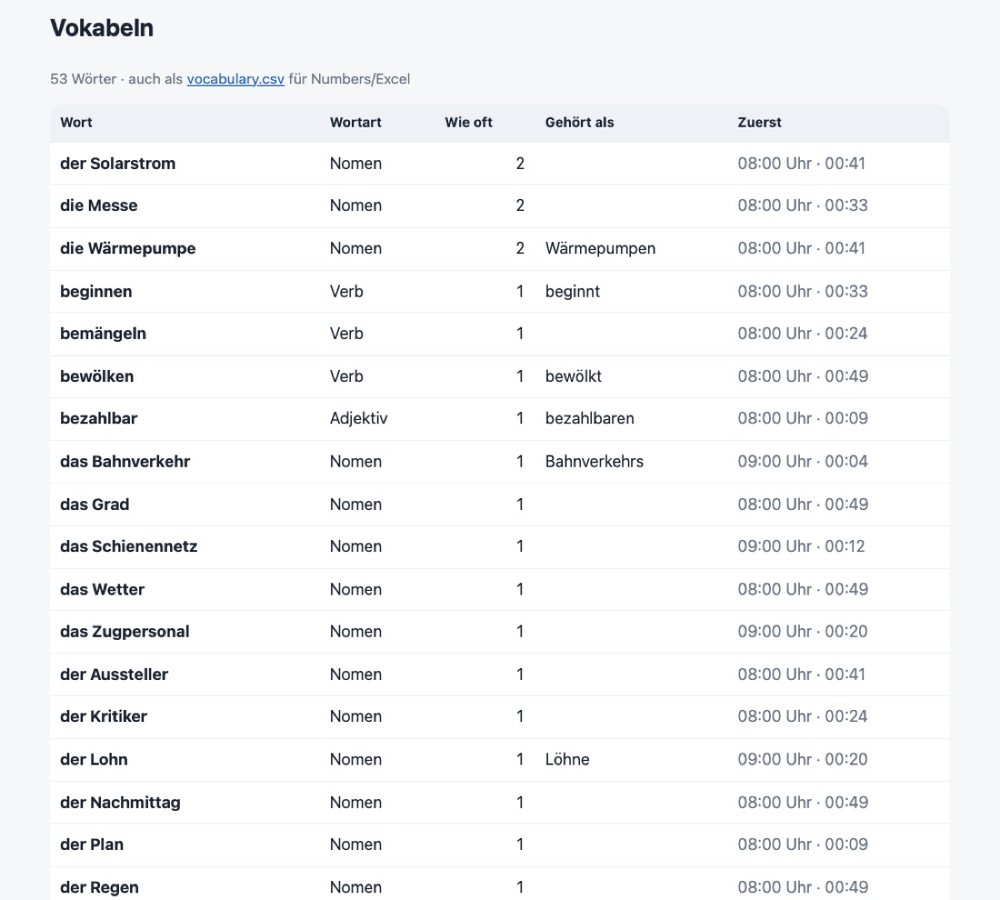
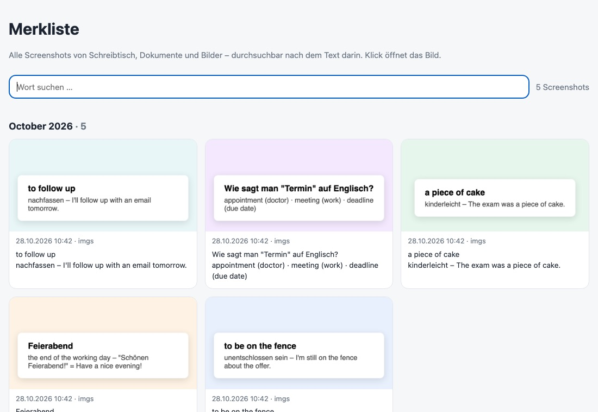
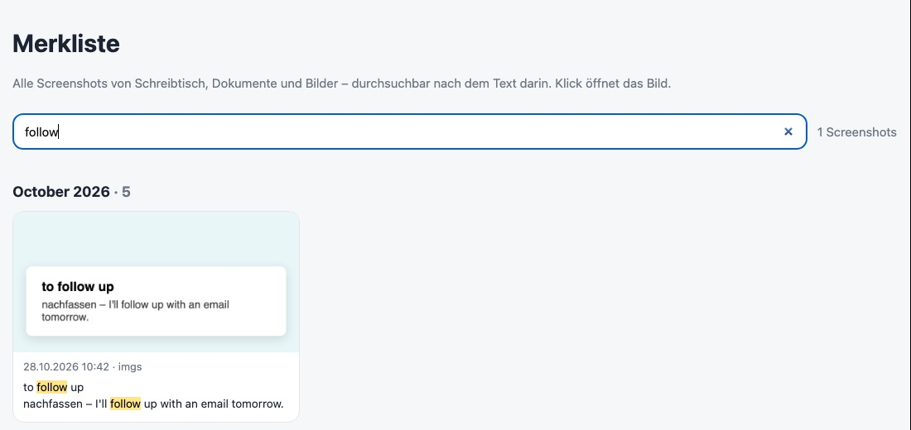

Musik aufs Handy
Eine iTunes-Bibliothek mit über 1.500 Songs auf ein Android-Handy gebracht: Formate umgewandelt, Playlists übernommen, alles geprüft.
PROJEKTE · MIT KI GEBAUT
Nimm dein Leben selbst in die Hand – mit KI als Werkzeug.
Mit KI lassen sich viele Alltagsprobleme selbst lösen: Finanzen ordnen, Sprachen lernen, Aufgaben automatisieren – und die eigenen Daten bei sich behalten. Du entscheidest, welche Dienste du wirklich brauchst. Ich bin kein Softwareentwickler. Aber ich habe gelernt, KI gezielt einzusetzen: Probleme klar zu beschreiben, Lösungen Schritt für Schritt zu bauen, Ergebnisse zu prüfen und zu verbessern. Genau das zeige ich dir im KI-Training. Alle Screenshots zeigen Beispieldaten – keine echten Konten, Beträge oder Namen.
Problem
Lernende brauchen zwischen den Stunden Übung – aber gute, kostenlose Angebote sind verstreut.
Lösung
Ergebnis
Eine öffentliche, kostenlose Plattform – live und von mir selbst betrieben.
Werkzeuge: HTML/CSS/JavaScript · Supabase · Web Audio · Claude
Live ansehen

Problem
Geld liegt verteilt auf Banken, Brokern und Krypto, in Euro und Dollar – ohne Überblick, und ohne Banklogins an Dritte zu geben.
Lösung
Ergebnis
Ein vollständiger Überblick – läuft nur auf dem eigenen Rechner, mit nur lesenden Zugängen.
Werkzeuge: Python · SQLite · Finanz-APIs (EZB, US-Treasury, Finnhub) · Claude



Problem
Beim Radiohören auf Deutsch gehen viele Wörter verloren – ich wollte nachlesen können, was genau gesagt wurde.
Lösung
Ergebnis
Jeden Tag ein durchsuchbares Transkript und neue Vokabeln – nur für den privaten Gebrauch, nach zwei Tagen automatisch gelöscht.
Werkzeuge: Python · Whisper (Spracherkennung) · spaCy · Claude


Problem
Hunderte Screenshots von Wörtern und Situationen, die ich mir merken wollte – aber nichts war wiederzufinden.
Lösung
Ergebnis
Jedes gespeicherte Wort ist in Sekunden wiederzufinden – ohne Cloud.
Werkzeuge: Swift (macOS Vision) · Python · Claude


Eine iTunes-Bibliothek mit über 1.500 Songs auf ein Android-Handy gebracht: Formate umgewandelt, Playlists übernommen, alles geprüft.
Fotos von einer alten Festplatte gerettet, aufgeteilte Windows-Backups wieder zusammengesetzt und jede Datei Byte für Byte geprüft – bevor das Backup eingerichtet wurde.
davidnawee.com und nawee.net – zweisprachig, inklusive Hebräisch von rechts nach links, datensparsam und ohne Cookie-Banner.
Ob du KI im Arbeitsalltag sinnvoll nutzen oder eigene kleine Lösungen bauen willst – im kostenlosen Erstgespräch schauen wir, wo du anfängst.